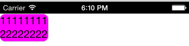

iOS 7出现后,状态栏占用空间被解放出来,增加了应用程序的可显示区域.同时应用程序的显示区域不再与状态栏的显示与隐藏相关.
为了更好的支持这种效果,并使项目能够灵活的控制现实的效果.我们把屏幕高度与状态栏的显隐分离.并提供接口由项目自定义状态栏所需要占用的空间.
这样可以支持iOS 6, iOS 7 liang两种状态栏效果.
产品中提供EMPConfig配置类.
通过-(void)setStatusBarHeight:(CGFloat)newStatusBarHeight设置状态栏高度.
此状态栏高度用于计算界面的显示区域.
通过状态栏高度的设置,来控制页面中视图的frame.包括UIContentViewController中的contentView_,showContent 和showControl弹出的视图.这几个视图的大小为全屏高度减去状态栏高度.
在iOS 6 上,状态栏高度固定为20px; 在iOS 7 上,如果需要iOS 6效果,则可以设置状态栏高度为20;如果需要ios 7效果,可以设置状态栏高度为0.
产品中默认实现ios 6 的效果.
所有设置的工作需要在UIContentViewController的初始化之前完成.
产品中的使用有UIContentViewController,UIContentView,以及RYTBodyView.
UIContentView,showControl,showContent
的frame 通过设置的状态栏高度计算获得.计算方式为屏幕大小减去setStatusBarHeight设置的状态栏高度.
计算方法如下:
- (CGRect)initApplicationFrame {
UIDevice *device = [UIDevice currentDevice];
CGSize initScreenSize = self.screenSize;
CGRect initApplicationFrame = CGRectZero;
initApplicationFrame.size = initScreenSize;
if ([device.systemVersion floatValue] >= 7.0) {
initApplicationFrame.origin.y = self.statusBarHeight;
}
initApplicationFrame.size.height = initScreenSize.height - self.statusBarHeight;
return initApplicationFrame;
}
我们以320*480的手机屏幕做参考.
产品默认为ios 6 效果.
设置statusBarHeight高度为0.
如:[EMPConfig sharedEMPConfig] setStatusBarHeight:0]此时,认为状态栏占用高度为0. UIContentView,showContent页面的frame为(0,0,320,480).
首先明确一点,UIContentView的坐标是从(0,statusBarHeight)位置开始的.下面以320*480为例,分别进行说明.
statusBarHeight值为20,UIContentView的坐标从(0,20)开始,无需进行修改报文和代码.

statusBarHeight值为0,UIContentView的坐标从(0,0)开始,此时如果不做处理,将会出现程序顶部与状态栏显示的内容重叠的情况. 如图:
针对这种情况,分别可用下面几种方法解决:
1)通过DemoViewController的viewDidLoad方法,可以在[super viewDidLoad];调用之后,初始化一个高度为20的view.然后将contentView的坐标手动下移20,这样的好处在于不用修改报文.代码如下:
[self.view insertSubview:view atIndex:0];//占位view不要放在subview最后一位,可能引发一些问题.
CGRect frame = contentView_.frame;
frame.origin.y = 20;
frame.size.height -= 20;
contentView_.frame = frame;
2)需要修改报文,将报文中的控件的坐标原点以(0,20)为准进行布局.
修改前:
<content>
<head>
<style>
.table{background-color:#ff00ff;}
</style>
</head>
<body>
<table>
<tr>
<td>
<label>11111111</label><br/>
<label>22222222</label>
</td>
</tr>
</table>
</body>
</content>
修改后:
<content>
<head>
<style>
.table{top:20px;background-color:#ff00ff;}
</style>
</head>
<body>
<table>
<tr>
<td>
<label>11111111</label><br/>
<label>22222222</label>
</td>
</tr>
</table>
</body>
</content>
如果需要设置状态栏隐藏,那么需要调用下面两句代码
[UIApplication sharedApplication].statusBarHidden = YES;
[[EMPConfig sharedEMPConfig] setStatusBarHeight:0.0];
这时,报文中得控件布局完所占大小应大于或等于screen:height接口返回的高度.不然可能会出现页面底部空白的情况(一般为body无样式时,因为body无样式,颜色为系统颜色,如最后一个控件为白色div,那么div布局完后未占满body,那么底部就会显示系统颜色).以320*480为例:
未修改报文:
<content>
<head>
<style>
.div{background-color:#ff0013;height:460px;}
</style>
</head>
<body>
<div class="div"></div>
</body>
</content>
修改后报文(body默认改为绿色):
<content>
<head>
<style>
.div{background-color:#ff0013;height:480px;}
</style>
</head>
<body>
<div class="div"></div>
</body>
</content>
iOS6不考虑(系统控制),针对iOS7之上的代码,因为iOS7之后原本就没有了状态栏占位,所以我们显示的状态栏颜色实际就是UIContentViewController.view的背景色,只需要调用rootViewController.view 设置背景图颜色即可.
[[UIApplication sharedApplication] delegate].window..rootViewController.view.backgroundColor = [UIColor blackcolor];
注:目前代码中,因为iOS7以上默认设置状态栏黑色,而同时设置了iOS7以上状态栏字体显示风格为UIStatusBarStyleLightContent.当项目设置背景色为浅色调时,需自己调用:
[UIApplication sharedApplication].statusBarStyle = UIStatusBarStyleDefault;
由于在ios7的效果下,导航栏高度增加.因此在xml页面中同样需要修改导航栏高度.这样会给页面开发者增加工作量.同时也会导致各平台报文不一致的情况. 解决方案:
statusBarHeight.viewDidLoad函数.修改UIContentView的frame为全屏大小减去状态栏区域.这样既可以保证ios7 的显示效果,又不需要修改报文.同时show的页面同样使用applicationFrame的返回值.为全屏显示.
| Date | Note | Modifier |
|---|---|---|
| 2014-12-30 | iOS 7状态栏效果处理方案(5.2.48后支持) | lin.jitao |